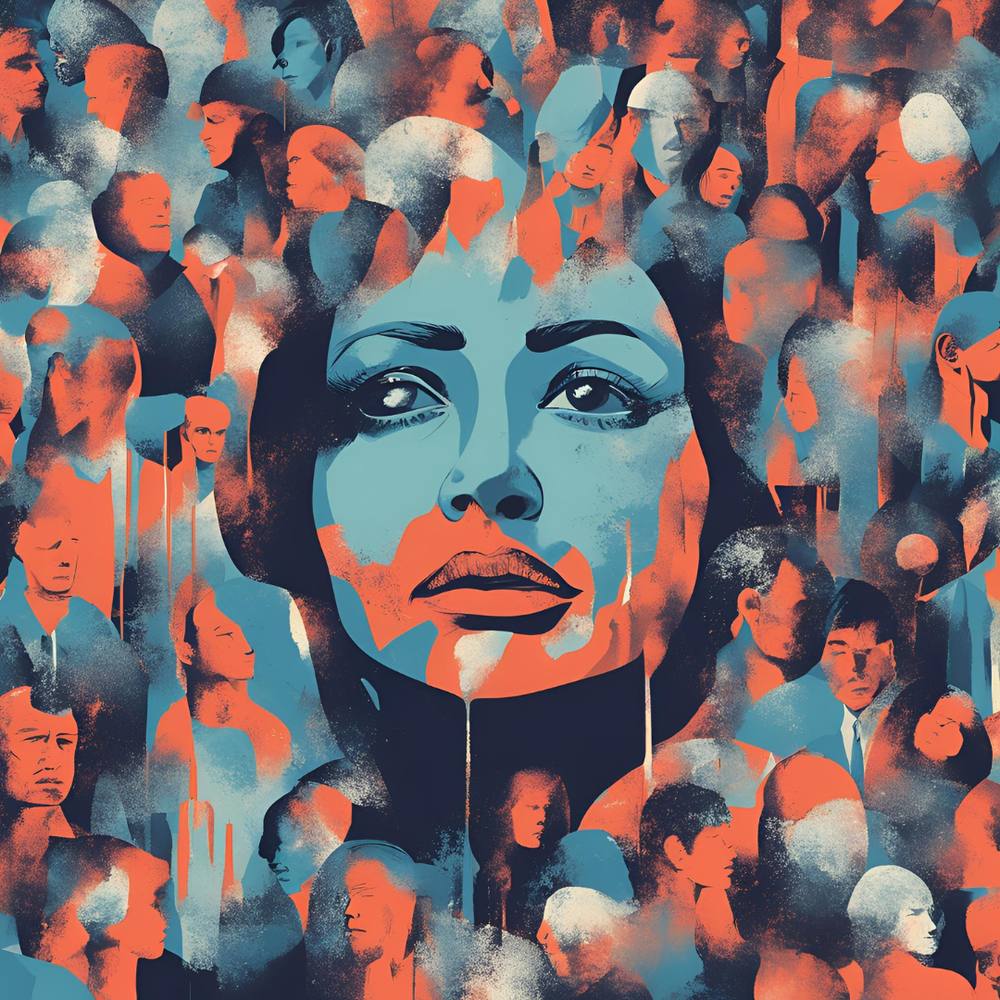

Introduction
The figure of the zombie has long occupied a central role in modern popular culture, serving as a reflection of deep societal anxieties. More than a mere horror trope, the zombie archetype embodies existential dread, consumerist alienation, and the loss of individual agency (Bishop, 2010). In the contemporary world, this symbolism becomes even more pertinent in relation to the meaning crisis (Vervaeke, Mastropietro, & Miscevic, 2017), which has rendered individuals vulnerable to ideological possession and, in extreme cases, the rise of totalitarianism (Desmet, 2022). This article explores how the zombie archetype offers a lens through which to understand the contemporary crisis of meaning and its dangerous alignment with authoritarian structures.
The Zombie as a Symbol of the Modern Meaning Crisis
John Vervaeke has extensively analyzed the contemporary meaning crisis as a condition in which individuals feel disconnected from deep sources of existential fulfillment (Vervaeke, 2019). This crisis manifests in a pervasive sense of nihilism, ideological extremism, and increased reliance on external authorities for validation. The zombie, a creature stripped of consciousness and purpose, represents the ultimate fate of a society that has lost its capacity for autonomous meaning-making.
Jean Baudrillard’s (1981) concept of hyperreality further elucidates the zombie’s relevance. In a world dominated by simulated realities, mass media, and consumer culture, individuals become passive absorbers of pre-packaged meaning, much like the undead who mindlessly seek sustenance. Similarly, Mark Fisher (2009) describes capitalist realism as an ideological system that restricts the imagination, making alternative modes of existence seem impossible. Zombies, in this framework, are the natural byproducts of a system that erodes agency and fosters passivity.
Oswald Spengler (1918) provides a historical perspective on civilizational decline, arguing that Western culture has entered its winter phase, where cultural exhaustion and loss of existential meaning lead to mechanized, bureaucratic, and authoritarian structures. René Guénon (1927) echoes this view in The Crisis of the Modern World, diagnosing modernity as a desacralized, materialistic age that has severed itself from metaphysical wisdom, leaving individuals spiritually adrift and vulnerable to mass ideological movements.
Platonic and neo-Platonic philosophy provides a fundamental critique of this phenomenon, arguing that true knowledge of the Self and reality can only be attained through intellectual reflection and metaphysical contemplation. Plato, in The Republic (380 BCE), illustrates this necessity through two crucial metaphors: the Cave and the Divided Line. The Allegory of the Cave describes how individuals, trapped in a world of illusions, mistake shadows for reality, just as modern man mistakes the superficial distractions of consumerist, capitalist culture for true fulfillment. The Divided Line metaphor further emphasizes the importance of ascending from mere opinion to intellectual understanding and ultimately to the highest form of knowledge: an apprehension of The Good. In rejecting metaphysical inquiry and discarding an overarching idea of The Good, modern Western societies have become fragmented, alienated, and unable to grasp the true nature of the Self and reality.
Mohsin Hamid’s The Reluctant Fundamentalist (2007) offers a literary exploration of this crisis of meaning. The novel’s protagonist, Changez, experiences deep alienation from Western society despite his initial success in the American corporate world. His disillusionment with capitalism, cultural identity, and ideological conflict mirrors the psychological conditions described by Desmet (2022) and Fisher (2009). Much like a zombie wandering without true purpose, Changez struggles to find authentic belonging, ultimately embracing a radicalized worldview in response to his existential void. Hamid’s work thus provides a contemporary fictional narrative that aligns with broader philosophical discussions on the erosion of meaning and its consequences.
Sadegh Hedayat’s The Blind Owl (1937) similarly delves into existential despair, alienation, and the psychological fragmentation of modern man. The unnamed narrator of The Blind Owl experiences extreme isolation and encounters a series of hallucinations and surreal visions, reflecting a deep crisis of meaning. Much like the zombie archetype, Hedayat’s protagonist is trapped in a cycle of torment, unable to escape the shadow of his own mind. His detachment from reality resonates with Baudrillard’s (1981) notion of hyperreality, where the line between illusion and existence blurs. Furthermore, the novel’s themes of nihilism and existential dread align with Fisher’s (2009) critique of capitalist realism, showing how modernity strips individuals of authentic experiences and leaves them grasping for meaning in a world that offers none. Hedayat’s exploration of despair and the loss of self directly ties into the themes of ideological submission and susceptibility to authoritarianism discussed in this article.
Totalitarianism and the Zombie Masses
The loss of meaning creates fertile ground for totalitarianism, a process Hannah Arendt (1951) describes as the systematic destruction of individuality in favor of mass conformity. When individuals lack intrinsic sources of purpose, they become susceptible to collective ideological movements that promise certainty, order, and belonging. Giorgio Agamben (2005) expands on this, arguing that in states of crisis, governments often invoke emergency measures that erode rights under the guise of protection, reducing individuals to mere biological existence—what he terms “bare life.”
Mattias Desmet (2022) further develops this perspective, describing how mass formation psychosis enables totalitarian structures by creating conditions where people willingly surrender their autonomy to ideological narratives. Just as zombies follow the herd instinctively, masses under totalitarian rule behave in predictable, dehumanized ways, unable to challenge the system that dictates their existence. Orwell’s 1984 (1949) presents a similar image of a populace stripped of its critical faculties, driven by fear, surveillance, and propaganda.
Conclusion: Resisting the Zombie Condition
If the zombie represents the endpoint of meaninglessness and authoritarian control, the antidote must lie in reclaiming individual agency and deep existential engagement. Vervaeke (2019) advocates for a return to wisdom traditions, cognitive science, and participatory meaning-making as a means of breaking free from nihilistic drift. Fisher (2009) suggests that imagining alternative social structures is the first step toward resisting ideological capture. Plato’s philosophy reminds us that only through intellectual reflection and the pursuit of The Good can we achieve a unified sense of Self and reality, forming the foundation for a healthy, harmonized society.